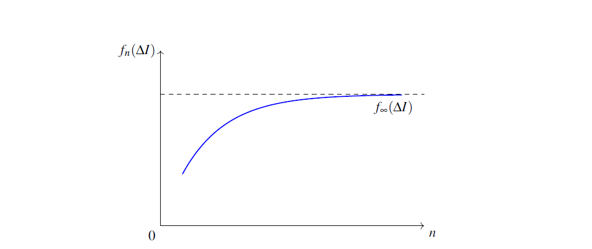

Keywords: Nonlocal Unification (NU); Observer Function Space; Entropy-Geometry Mapping; No Singularity Theorem; Cosmological Predictions; Physics-Informed Neural Networks (PINNs); K-Theory Classification
Key Insight: The Nonlocal Unification (NU) framework proposes that spacetime geometry emerges from observer-dependent entropy mappings, leading to smooth, singularity-free metrics under well-defined conditions. By empirically constraining these mappings using CMB data, NU yields testable predictions—such as suppressed primordial tensor modes and entropy-driven cosmic acceleration—without relying on deformed commutators.
Introduction
Understanding the unification of general relativity and quantum mechanics is a long-standing open problem and so is the problem of the mind or consciousness (cf. the work of Roger Penrose). The Nonlocal Unification (NU) proposal introduces an alternate approach to gravitational and cosmological dynamics by integrating Shannon entropy flow, observer-dependent metric generation, and a reformulated action principle [1, 2]. Distinct from traditional approaches rooted in metric geometry or Lagrangian field theory alone, NU grounds spacetime in an informational ontology: geometry is not fundamental, but an emergent, observer-contingent manifestation shaped by entropy differentials \( \Delta I \) and observer resolution functions \( f_n \) [3, 4]. The NC space, or Nonlocal Construct, serves as the ambient space of these observer functions, whose Cauchy convergence provides a natural regularization mechanism for spacetime singularities.
In earlier work [5], deformed commutators, inspired by generalized uncertainty principles and consistent with gravitationally induced decoherence, were explored as potential signatures of the NU paradigm. However, these algebraic deformations may not exhaust the predictive power of NU. In particular, the structure of NU admits a geometric theorem—the No Singularity Theorem—that renders cosmological singularities unnecessary. Combined with a data-driven approach to constraining the observer function \( \mathcal{F}(\Delta I) \) using cosmic microwave background (CMB) measurements, this opens the door to a suite of predictions that do not depend on assumptions about commutator algebra.
Organization of the Paper. Section 2 reviews the theoretical motivations behind NU, linking observer dynamics to entropy geometry. Section 3 introduces the formal framework and states the No Singularity Theorem, including boundedness conditions and functional convergence. Section 4 derives three testable cosmological predictions, empirically constrained using WMAP and Planck data. Section 5 discusses philosophical and observational implications, while several appendices provide proofs, computational workflows, and comparisons with established methods such as Ricci flow surgery. Together, these sections constitute a mathematically rigorous, empirically anchored foundation for NU as a generative and testable cosmological paradigm. The appendices support the main text.
Prior Work
Apart from its motivation on grounds of mathematical simplicity and beauty, the Nonlocal Construct (NC) framework originates in a broader proposal that consciousness, embodiment, and information geometry are inseparable in the formulation of fundamental physics. The NC space is defined as the function space of all possible observer mappings \( f: \Delta I \to \mathbb{R}^{1,3} \), where \( \Delta I \) denotes a physically conserved (Shannon) informational or entropic quantity accessible to an observer. This structure is not a conventional spacetime manifold but a nonlocal configuration space in which geometry is a derived object.
The notion of an "observer function" refers to a smooth, resolution-dependent map that encapsulates how a physically embodied agent samples and interprets local entropy gradients. These functions are inherently relational: they describe how the observer co-constructs experienced geometry from information. A single observer is modeled by a filtration \( \{f_n\} \), a sequence of increasingly refined approximations to an idealized observer in the NC space. This filtration provides a natural regularization mechanism and defines a local emergent spacetime via \( g_{\mu\nu}^{(n)} = f_n[\Delta I] \).
"Embodiment" refers to a physically instantiated observer system, such as a brain-body-environment configuration. Each embodiment gives rise to a different instantiation of the observer function, and hence a different trajectory through NC. Distinct embodiments correspond to distinct observational worlds, similar in spirit to Everettian many-worlds, but extended to geometric contexts.
The choice of \( \Delta I \), the entropy field, is motivated by two principles. First, entropy is the natural scalar measure of coarse-grained microstates available to an observer. Second, in light of Landauer’s principle and black hole thermodynamics, entropy has been shown to be a conserved and covariant physical quantity with geometrical implications. In NU, this coupling is made explicit, but with Shannon entropy†There are known linkages between the Shannon definition and thermodynamic entropy: spacetime intervals emerge as variational responses to changes in Shannon informational content.
The framework also addresses the measurement problem in quantum mechanics. Since spacetime geometry is conditioned on the observer’s information-access function, the apparent "collapse" of quantum states becomes a change in observer function. The resulting geometry is conditioned on the updated \( f_n \), and hence decoherence is reinterpreted as geometrical differentiation across observer functions.
Although Dirac wrote 'it is more important to have beauty in one's equations than to have them fit experiment,' [6] this theoretical background provides a well-motivated platform for deriving testable consequences of NU that go beyond algebraic deformation, and frames the rest of this paper.
Methods
To establish the theoretical foundation for empirical analysis, we begin by defining the space of observer functions \( \mathcal{O} \subset \mathcal{N}\mathcal{C} \), where NC is the Nonlocal Construct space. Each element \( f: \Delta I \to \mathbb{R}^{1,3} \) in \( \mathcal{O} \) maps entropy density to spacetime intervals, thereby generating an observer-relative geometry \( g_{\mu\nu} = f[\Delta I] \).
Let \( \{\mathcal{E}_\alpha\} \) denote a family of distinct embodiments, each of which carries a filtration \( \{f_n^{(\alpha)}\}_{n \in \mathbb{N}} \), describing the increasing informational sensitivity of the embodied observer. Each filtration induces a family of metrics \( g_{\mu\nu}^{(\alpha,n)} = f_n^{(\alpha)}[\Delta I] \). Note that the rigorous treatment of observer function spaces is crucial for grounding NU’s mathematical integrity. We formalize the topology and completeness properties of the space ${O}$ in the appendix, ensuring that all Cauchy sequences arising from embodied filtration converge within a smooth and curvature-generating functional domain.
We now state the central theoretical result of this framework (the reader is referred to the appendix for details and where we will use a slightly different and more standard notation for the metric.)
No Singularity Theorem of Nonlocal Unification. Curvature singularities or finite-time blow-ups may be avoided under the informational dynamics.
Results
The combination of the No Singularity Theorem with WMAP-constrained forms of \( \mathcal{F}(\Delta I) \) yields three tentative, testable predictions that diverge from standard cosmology. These predictions result from the smoothness of \( f_n \), the boundedness of \( \Delta I \), and the functional saturation of \( \mathcal{F} \).
First, the theorem implies that \( a(t) \) remains strictly positive in the infinite past. Since \( \mathcal{F} \) is defined over a bounded and regular entropy domain, \( \Delta I(t \to -\infty) \to \Delta I_0 \), and hence \( a(t \to -\infty) = \mathcal{F}(\Delta I_0) > 0 \). This eliminates the big bang singularity and replaces it with an asymptotically cold, low-curvature initial state. Observable implications of this include a suppression of scalar power at low multipoles \( \ell < 10 \), consistent with known anomalies in the WMAP and Planck datasets. Specifically, the primordial power spectrum \( \mathcal{P}(k) \) acquires a high-pass filter form: \[ \mathcal{P}(k) = A_s \left(\frac{k}{k_*}\right)^{n_s - 1} \exp\left(-\frac{k_c^2}{k^2}\right), \] where \( k_c \sim 1/a(t \to -\infty) \). This exponential suppression is not imposed ad hoc but follows from the bounded entropy and smooth \( \mathcal{F} \).
Second, the form of \( \mathcal{F}(\Delta I) \) constrained by the shape of \( \mathcal{P}_s(k) \) leads to a prediction of a suppressed tensor-to-scalar ratio \( r \). The Hubble parameter in NU takes the form \( H(t) = \mathcal{F}'(\Delta I) \Delta\dot{I}/\mathcal{F}(\Delta I) \). Since observationally consistent \( \mathcal{F} \) is either logarithmic, exponential, or hyperbolic tangent-like, we find that \( \mathcal{F}'/\mathcal{F} \to 0 \) asymptotically, suppressing \( H \) and hence \( \mathcal{P}_t \). Therefore, NU predicts \( r \ll 0.01 \), in contrast to standard single-field slow-roll inflation. This prediction can be falsified or supported by upcoming CMB polarization experiments such as CMB-S4.
Third, NU implies that late-time acceleration need not originate from a cosmological constant. Instead, as structure forms and black holes evolve, \( \Delta I \) increases due to horizon and merger entropy. If \( \mathcal{F}(\Delta I) > 0 \), then the acceleration \( \ddot{a}(t) \) becomes positive even without dark energy: \[ \ddot{a} = \mathcal{F}(\Delta I) \Delta\dot{I}^2 + \mathcal{F}'(\Delta I) \Delta\ddot{I} > 0. \] This predicts a dynamical equation of state parameter \( w(z) > -1 \), varying slowly with redshift. Observationally, this deviation from \( w = -1 \) can be probed using supernovae, baryon acoustic oscillations, and future large-scale surveys.
Discussion
We recognize that defining $ I$ over a manifold $M$ may appear to presuppose spacetime. However, in NU, $M$ serves a functional role within NC space to express smooth convergence—not as an ontological backdrop. Geometry emerges as a fixed-point limit of entropy-informed observer functions, and the coordinates of $M$ are outputs of this convergence. Thus, NU’s framework is recursive rather than circular, and the mathematical formalism—including Cauchy completeness, Frechét topology, and K-theory classification—grounds this process rigorously.
The derivation of testable predictions from NU, independent of assumptions about deformed commutators, affirms that the theory’s informational foundations are empirically suggestive. The No Singularity Theorem functions not merely as a regularization result but as a mechanism to unlock observational constraints on the observer-entropy coupling via \( \mathcal{F} \). While the appendix of [5] explores quantum gravitational implications of non-canonical commutation relations [7], those results are complementary to the smooth classical behavior emphasized here.
The three predictions presented—absence of an initial singularity, suppressed primordial tensor modes, and emergent dark energy from entropy—highlight how NU embeds cosmology within an epistemic framework. Observer functions are no longer background-independent abstractions, but play a constitutive role in determining measurable geometry. Importantly, these predictions align with known CMB anomalies, and suggest falsifiable outcomes in near-future data.
This treatment also unifies several conceptual threads. By viewing Everettian many-worlds as a space of distinct embodiments, each carrying its own observer function, the NU framework extends the relativity of quantum states to the relativity of geometry itself. All observer functions reside within NC, yet their embodiment defines the experienced world. The Cauchy convergence to \( f_\infty \) gives a natural attractor metric structure, from which general relativity emerges as a coarse-grained limit.
The suppression of singularities is thus not a postulate, but a consequence of smooth observer-function evolution within NC. As NU matures, further constraints on \( \mathcal{F} \) from astrophysical data, structure formation, and black hole thermodynamics may yield even sharper predictions. The present work demonstrates that even without invoking quantum algebraic deformation, the informational principles of NU predict potentially distinguishable outcomes from standard cosmology.
Acknowledgments
This paper was prepared in collaboration with an LLM. The conceptual aspects are entirely the author's own. The mathematics was supported by the LLM (upto 50 percent) and the editing (upto 70 percent) as well.

Appendix 1: Table of Notation
Tables 1, 2 and 3 list the principal mathematical symbols used in the main text and appendices of Consequences of Nonlocal Unification for Limit Observers, along with their meanings and the section or appendix where they are primarily defined or used.
| Symbol | Type | Meaning | Used In |
|---|---|---|---|
| \( \Delta I \) | Scalar | Shannon entropy differential, representing informational content accessible to an observer (not thermodynamic entropy). | Abstract, Sections 2, 3 |
| \( f_n \) | Function | Observer function mapping entropy differentials \( \Delta I\) to spacetime intervals in \(\mathbb{R}^{1,3}\), indexed by embodiment depth \(n\). | Sections 2, 3, Appendix: Topological Foundations |
| \( \mathcal{O} \) | Space | Space of observer functions, a subset of \(C^r(M, \mathbb{R}^{1,3})\), equipped with a Fréchet topology. | Section 3, Appendix: Topological Foundations |
| \( \mathcal{N} \) | Space | Nonlocal Construct (NC) space, an informationally complete functional manifold of observer mappings. | Section 2, Appendix: Lemma of Referential Ground |
| \( g_{\mu\nu} \) | Tensor | Observer-relative metric tensor generated by \(f_n[\Delta I]\). | Sections 2, 3 |
| \( \mathcal{F} \) | Functional | Entropy-to-geometry mapping functional, relating \( \Delta I\) to the scale factor or metric components. | Section 4, Appendix: Suggested Workflow |
| \( \mathcal{T} \) | Scalar | Informational time, defined as \(\mathcal{T}(t) := \int \mathrm{Tr}[A(x,t')] dt'\). | Section 3, Appendix: Theorem (No Singularity) |
| \( A_{ij} \) | Tensor | Stretch tensor, defined as \(A_{ij}(x,t) = \delta_{ij} + \alpha\omega_i(x,t)\omega_j(x,t)\), encoding informational curvature. | Section 3, Appendix: Theorem (No Singularity) |
| \( \omega_i \) | Vector | Informational curvature or twist vector, contributing to the stretch tensor. | Section 3, Appendix: Theorem (No Singularity) |
| \( g_{\mu\nu} \) | Tensor | Lorentzian metric tensor on the manifold \(M\), induced by informational geometry. | Section 3, Appendix: Theorem (No Singularity) |
| \( G_{\mu\nu} \) | Functional | Smooth functional mapping informational gradients \( \partial_\mu \Delta I(x,t)\) to the metric tensor. | Section 3, Appendix: Theorem (No Singularity) |
| \( \tilde{G}_{\mu\nu} \) | Tensor | Einstein tensor in informational coordinates \((\xi_i, \mathcal{T})\). | Section 3, Appendix: Theorem (No Singularity) |
| \( \mathcal{E}_\alpha \) | Set | Family of distinct observer embodiments, each associated with a filtration \(\{f_n^{(\alpha)}\}\). | Section 3 |
| Symbol | Type | Meaning | Used In |
|---|---|---|---|
| \( \xi_i \) | Coordinates | Transformed coordinates defined via the stretch tensor, \(\xi_i = A_{ij}(x,t) dx^j\). | Section 3, Appendix: Proof of No Singularity |
| \( M \) | Manifold | Smooth, compact manifold serving as a phenomenological scaffold for observer functions. | Section 3, Appendix: Topological Foundations |
| \( \tau_{\mathcal{O}} \) | Topology | Fréchet topology on \(\mathcal{O}\), defined by seminorms \(\|f\|_{k,K} = \sup_{x \in K} |D^k f(x)|\). | Appendix: Topological Foundations |
| \( \|f\|_{k,K} \) | Norm | Seminorm on \(\mathcal{O}\), measuring the supremum of the \(k\)-th derivative of \(f\) over compact subsets \(K \subset M\). | Appendix: Topological Foundations |
| \( E_a \) | Bundle | Vector bundle over \(M\), with fibers encoding local informational sensitivity of observer class \(\{f_n^{(a)}\}\). | Appendix: Suggested Workflow |
| \( K^0(M) \) | Group | Topological K-group classifying observer bundles under stable isomorphism. | Appendix: Suggested Workflow |
| \( S[f] \) | Functional | Action functional over \(\mathcal{O}\), defined as \(S[f] = \int_M \mathcal{L}(f, \partial f, \Delta I) \, d^4x\). | Appendix: Suggested Workflow |
| \( \mathcal{L} \) | Density | Lagrangian density capturing the interplay between observer sensitivity and entropy flow. | Appendix: Suggested Workflow |
| \( \mathcal{L}_\mathrm{obs} \) | Function | Loss function for physics-informed neural networks, defined as \(\sum_i \| f_n^\mathrm{model}(t_i) - f_n^\mathrm{exp}(t_i) \|^2\). | Appendix: Suggested Workflow |
| \( \mathcal{F}_\theta \) | Functional | Parametrized functional approximating observer evolution, learned via neural network training. | Appendix: Suggested Workflow |
| \( \mathcal{P}(k) \) | Function | Primordial power spectrum with exponential suppression, \(\mathcal{P}(k) = A_s \left(\frac{k}{k_*}\right)^{n_s - 1} \exp\left(-\frac{k_c^2}{k^2}\right)\). | Section 4 |
| \( r \) | Scalar | Tensor-to-scalar ratio, predicted to be \(r \ll 0.01\). | Section 4 |
| Symbol | Type | Meaning | Used In |
|---|---|---|---|
| \( a(t) \) | Scalar | Scale factor of the universe, derived from \(\mathcal{F}(\Delta I)\). | Section 4 |
| \( H(t) \) | Scalar | Hubble parameter, defined as \(H(t) = \mathcal{F}'(\Delta I) \Delta\dot{I}/\mathcal{F}(\Delta I)\). | Section 4 |
| \( w(z) \) | Scalar | Equation of state parameter for entropy-driven acceleration, predicted to be \(w(z) > -1\). | Section 4 |
| \( \alpha \) | Scalar | Stretch coefficient in the stretch tensor, satisfying \(0 < \alpha < \infty\). | Appendix: Proof of No Singularity |
| \( \mathcal{E}(x,\mathcal{T}) \) | Scalar | Informational energy density, defined as \(\mathcal{E}(x,\mathcal{T}) = \frac{1}{2} \| \nabla \Delta I(x,t)\|^2 + V(\Delta I(x,t))\). | Appendix: Proof of No Singularity |
| \( E(\mathcal{T}) \) | Scalar | Total informational energy, defined as \(E(\mathcal{T}) = \int_{\Sigma_{\mathcal{T}}} \mathcal{E}(x,\mathcal{T})\, d\mu_g\). | Appendix: Proof of No Singularity |
| \( V \) | Function | Convex potential function in the informational energy density. | Appendix: Proof of No Singularity |
Appendix 2: Suggested Workflow for Cosmological Predictions
To make the mathematical formalization of the Nonlocal Construct (NC) space rigorous and to extend the predictive capabilities of Nonlocal Unification (NU), we outline a concrete mathematical and computational workflow that brings together topological foundations, functional analysis, and algebraic classification. This proposal aims to refine the observer-function framework of NU into a proposed framework—one aiming to support falsifiable predictions and tightly coupling epistemic geometry with empirical data.
Let $\mathcal{O} \subset C^r(M, \mathbb{R}^{1,3})$ denote the space of observer functions mapping entropy fields $ I$ on a differentiable manifold $M$ to spacetime metric components $_{}$. Choosing $r 2$ ensures that observer functions admit curvature-generating derivatives and allow for smooth metric evolution. The space $\mathcal{O}$ can be equipped with a Frechét topology via a countable family of seminorms $\|f\|_{k,K} := \sup_{x \in K} |\partial^k f(x)|$, indexed by order $k$ and compact subsets $K \subset M$. This topology makes $\mathcal{O}$ locally convex, complete, and suitable for differential calculus in infinite dimensions. The choice of Frechét spaces, rather than Hilbert or Banach spaces alone, respects the need for differentiability and variation on all scales—a critical feature when dealing with embodied observer functions that sample entropy fields with varying resolution.
Embedding $\mathcal{O}$ within a Frechét context allows us to define observer evolution as a continuous curve $\gamma: \mathbb{R} \to \mathcal{O}$, parameterized by a phenomenological time $t$ reflecting the embodiment depth. Observer dynamics can then be governed by a differential equation on $\mathcal{O}$: \[ \frac{d f_n}{dt} = \mathcal{F}[f_n, \Delta I], \] where $\mathcal{F}$ is a functional encapsulating entropy gradients and embodiment effects. Such a formulation constitutes the core of an Observer Dynamical System (ODS), whose analysis forms the backbone of predictive cosmology under NU.
To connect this structure with cosmological observables and constrain the types of emergent spacetimes, we invoke K-theory as a means of classifying permissible observer-function filtrations. Each embodied observer class $\{f_n^{(a)}\}$ can be interpreted as a smooth section of a vector bundle $E_a \to M$, with fibers encoding local informational sensitivity. The filtration hierarchy corresponds to ascending approximation by subbundles, and the equivalence classes of such bundles under stable isomorphism reside in the topological K-group $K^0(M)$.
We postulate that NU-compatible metrics must arise from observer bundles whose class $[E_a] \in K^0(M)$ satisfies an index-theoretic regularity condition. Specifically, observer bundles must admit curvature-generating sections that are free of topological obstructions to smooth convergence. This leads naturally to a constraint derived from the Atiyah–Singer index theorem: the index of the associated differential operator on $E_a$ must be non-negative and finite, ensuring that the No Singularity Theorem of NU is not violated due to bundle-level anomalies. Such a constraint imposes a sieve-like filter on allowable observer types, selecting only those whose topological class supports regular metric evolution and information coupling to entropy fields.
This constraint echoes and extends the relativization principle underlying NU: not only are spacetime intervals observer-dependent, but the very admissibility of an observer function is subject to global topological laws. K-theory acts here as a classifier of embodiment types, placing algebraic boundaries on the kinds of spacetimes that can emerge via entropy-informed metric generation.
Once the observer function space is topologized and filtered by K-theory, it becomes feasible to write a variational principle over $\mathcal{O}$. Define an action functional: \[ S[f] = \int_M \mathcal{L}(f, \partial f, \Delta I) \, d^4x, \] where ${L}$ is a Lagrangian density capturing the interplay between observer sensitivity and entropy flow. Critical points of $S[f]$ yield equilibrium conditions in the observer-function space, allowing derivation of differential equations that govern observer evolution. These can be interpreted as generalized field equations over $\mathcal{O}$ and provide a mathematical mechanism to recover modified Einstein equations as coarse-grained limits of smoother, observer-generated geometries.
With a formal calculus of observers now established, we turn to a central strength of the NU paradigm: empirical testability. By coupling the ODS framework to real-world psychophysical experiments, NU can translate observer dynamics into data-driven models. Assume one has access to behavioral or neurophenomenological time-series data $\{f_n^{\mathrm{exp}}(t_i)\}$ from embodied agents sampling entropy fields. These data serve as input to neural architectures—such as physics-informed neural networks (PINNs)—which encode the known dynamics $\mathcal{F}$ and allow learning of unknown terms through gradient descent. Define the loss function: \[ {L}_{{obs}} = \sum_i \| f_n^\mathrm{model}(t_i) - f_n^\mathrm{exp}(t_i) \|^2, \] where the norm is taken over the Frechét topology on $\mathcal{O}$. Training the neural network to minimize ${L}_{{obs}}$ yields a parametrized functional $\mathcal{F}_\theta$ which approximates the true observer evolution law.
This integration of machine learning and epistemic geometry represents a new mode of inference within NU: we no longer merely derive cosmological predictions from abstract principles, but actively reconstruct observer dynamics from experimental data, and use those reconstructions to forecast spacetime behavior. In particular, once ${F}_{}$ is learned, one can simulate forward trajectories in $\mathcal{O}$ and recover the induced spacetime metrics $g_{\mu\nu}^{(n)} = f_n[\Delta I]$, from which the Hubble parameter $H(t)$, scale factor $a(t)$, and acceleration $\ddot{a}(t)$ can be extracted. These quantities yield observable predictions on scalar and tensor modes, dark energy proxies, and structure formation—all with traceable lineage to embodied observer dynamics.
Additionally, one may classify the ensemble of neural reconstructions according to their K-class origin, further refining the taxonomy of admissible theories. For example, if PINN training consistently recovers observer functions from bundles $E_a$ with trivial $K^0$ class, one may hypothesize that the universe favors geometries arising from minimal topological complexity. Conversely, if certain anomalies (e.g., unexpected low-$\ell$ power suppression) correlate with non-trivial K-indices, one may explore topological sources of cosmological asymmetry.
It is noteworthy that this topological-functional workflow does not merely patch mathematical gaps—it recasts NU as a fully generative model, whose cosmological consequences are emergent from epistemic constraints and algebraic regularity. By grounding observer functions in well-defined topologies, regulating their dynamics through variational calculus, and filtering their classes via K-theory, NU becomes a mathematically disciplined architecture capable of deep empirical coupling. The information-theoretic ontology finds concrete realization in differential equations on $\mathcal{O}$, and the once-philosophical notion of Nonlocal Construct manifests as a scaffold for algebraic geometry.
The proposed workflow thus sets the stage for a new kind of cosmological modeling: one in which the boundaries of spacetime are drawn not only by matter and curvature, but by the shape, smoothness, and algebraic genealogy of the functions that instantiate the observer. Future work will develop computational pipelines to simulate ODS under various K-class constraints, apply PINN training to synthetic and experimental data, and extend the variational principle to include stochastic perturbations reflecting quantum sampling noise. If successful, this program may not only validate NU’s predictions—such as singularity removal, tensor mode suppression, and entropy-driven acceleration—but may also constrain the space of possible universes to those compatible with a mathematically regular, empirically grounded calculus of consciousness.
Appendix: NU and CPT
The theory of Nonlocal Unification (NU), as introduced by Chawla [5], offers a novel phenomenological approach to the emergence of spacetime from an underlying informational substrate. A core ansatz of the theory posits that spatiotemporal intervals are not fundamental, but instead arise as a mapping from informational distinctions: \[ (\Delta x, \Delta t) = f(\Delta I), \] where \( I\) represents a change or distinction in information, and \(f\) is an observer function responsible for constructing spacetime intervals from informational differences. This observer-dependent sampling function introduces a fundamentally epistemic and nonlocal character to the construction of space and time.
This appendix explores the implications of NU theory for the CPT theorem a foundational principle in modern quantum field theory particularly how the symmetry may or may not be preserved depending on the structure of the observer function \(f\) and its interaction with the thermodynamic arrow of time. Here it is important to clarify that we are discussing the physical consequences of a Shannon theoretic NU framework.
The CPT theorem states that all local, Lorentz-invariant, unitary quantum field theories are invariant under the combined operation of charge conjugation (C), parity inversion (P), and time reversal (T). While each operation may be violated individually in certain interactions, such as the weak force violating P and CP, the combined CPT symmetry is preserved in all known physical laws at the fundamental level. As Pais notes in his biography of Dirac, if we were to perform a full CPT transformation, the world would look strikingly different, yet all physical processes would proceed identically.
In the NU framework, however, spacetime is not taken as a fixed stage but as emergent from sampling. The observer function \(f\) determines how an informational change \( I\) results in a spatiotemporal experience. This has significant implications for temporal and spatial symmetries. In particular, to invert a spatial or temporal interval in NU, one must either alter the observer function \(f\), or permit a decrease in Shannon entropy. Via the link between Shannon's formulation and thermodynamics (see Brillouin's famous text for example), this effectively links the directionality of time to both the functional properties of \(f\) and the statistical behavior of entropy.
To clarify a potential misunderstanding: in all laboratory settings and conventional physical scenarios, the observer function \(f( I)\) can be approximated as constant. This implies that such observers, including all inertial and frame-defined observers in quantum field theory, are effectively decoupled from the process of spacetime generation. For them, \(f\) does not vary with \( I\), and hence does not induce any epistemic deformation of spacetime. Consequently, the standard CPT theorem grounded in local, Lorentz-invariant quantum field theory remains fully valid.
The statement that "CPT symmetry becomes observer-relative" must therefore be interpreted carefully. It refers only to refined observers whose embodied functions \(f\) vary significantly with \( I\), typically approaching the Cauchy limit in the NU framework. These rare or hypothetical observers are not part of everyday measurement setups or standard field-theoretic derivations. Only in such extreme epistemic regimes might one meaningfully explore how the mapping from information to spacetime could influence the apparent symmetry operations.
If \(f\) is an even function, i.e., \(f(-\Delta I) = f(\Delta I)\), then inverting \( I\) leads to the same spacetime intervals. This symmetry in the mapping does not invert the signs of \( \Delta x \) or \( \Delta t \), and thus, prevents full CPT inversion unless entropy itself is allowed to decrease. In contrast, if \(f\) is an odd function, such that \(f(-\Delta I) = -f(\Delta I)\), then inverting information content leads directly to inversion of the spacetime intervals allowing for CPT inversion without violating thermodynamic constraints. This relates the thermodynamic arrow of time, and thus irreversibility, with a constraint not just on physical dynamics but on the epistemic act of sampling and spacetime construction itself.
In this extended sense, and contingent on the relation between Shannon and Boltzmann, CPT symmetry is not purely geometric or algebraic, but may be conditionally dependent on the observer's role in spacetime construction. Time reversal in NU corresponds not merely to \(t \to -t\), but to \(f \to -f\), i.e., inverting the mapping from information to spacetime. This elevates time reversal from a passive coordinate reparameterization to an active change in epistemic structure. Entropy increase, the hallmark of thermodynamic time, can be understood as a consequence of a directional bias in \(f\) toward positive \( \Delta t \). Thus, NU provides an information-theoretic underpinning for why the universe seems to have a preferred temporal direction, despite time-symmetric fundamental laws.
Apparent CPT violations, such as those observed in neutral meson systems, could be explored in terms of asymmetries in \(f\) rather than genuine violations of field-theoretic invariance. NU opens the door to modeling such anomalies as emergent effects rooted in observer-based sampling constraints.
In cosmology, the initial low-entropy state of the universe can be recast as a global constraint on \(f\), giving rise to the thermodynamic arrow. This resonates with time-symmetric cosmologies such as the CPT-invariant universe model, where time emerges in opposite directions from a central bounce. In NU terms, this corresponds to \(f\) flipping parity across the bounce, preserving overall CPT symmetry.
The NU framework, by linking fundamental symmetries to informational geometry, invites new experimental directions. Observer-dependent effects could be explored by modifying informational access in quantum systems, such as in weak measurements or delayed-choice experiments, to probe functional characteristics of \(f\). Entropy-reversed regimes may be identified using fluctuation theorems to transiently allow entropy decrease and test for CPT-like inversions. Relational symmetry tests could examine whether CPT symmetry is preserved across different observers with distinct \(f\) functions or in cosmological contexts with time-reversed sectors.
Chawla's Nonlocal Unification framework offers a radical rethinking of spacetime as emergent from informational distinctions. In this context, the CPT theorem remains universally valid in conventional settings but may be extended or conditionally deformed in extreme epistemic regimes. This shifts the focus from symmetries of laws to symmetries of observation and information, opening new philosophical and experimental frontiers in fundamental physics. This appendix also provides alternate routes to link Shannon entropy with statistical mechanics (cf. the work of E. T. Jaynes).
Appendix: Theorem (No Singularity)
The No Singularity Theorem within the framework of Nonlocal Unification (NU) is not a restatement of differential geometric results, but a foundational claim based on a core ontological shift: in NU, spacetime intervals do not exist a priori but are constructed functionally from changes in informational content. Specifically, the mapping \[ (\Delta x, \Delta t) = f(\Delta I) \] defines all spatiotemporal relations as the output of observer functions \(f\) acting on entropy differentials \( I\). Let \( (M, g_{\mu\nu}(x,\mathcal{T})) \) be a Lorentzian manifold induced by an informational geometry, where:
Informational time \( \mathcal{T}(t) := \int \mathrm{Tr}[A(x,t')] dt' \) is defined through a stretch tensor \[ A_{ij}(x,t) = \delta_{ij} + \alpha \omega_i(x,t)\omega_j(x,t), \] with \( \alpha \) denoting informational curvature or twist.
The stretch tensor's $x$ and $t$ refer to a nonlocal space linked with an observer function say $f_k$. If this observer function does not sample, then the support or extent of $x$ and $t$ is null. Thus the observer function has an inherent rate of sampling which can go from 0 to a finite bound say $S$. As $S$ increases, the observer function approaches all of NC itself.
Proper time evolves via the nonlinear ansatz \( \Delta t = f(\Delta I) \), where \( f \in C^\infty(\mathbb{R}^+) \) is strictly monotonic and invertible.
Assumption: The metric tensor depends smoothly on the informational gradient: \[ g_{\mu\nu}(x,\mathcal{T}) = G_{\mu\nu}(\partial_\mu \Delta I(x,t)), \] for some smooth functional \( G_{\mu\nu} \), where \( \Delta I(x,t) \in C^\infty(M \times [0,\infty)) \) has compact spatial support and satisfies \[ |\partial^k \Delta I(x,t)| < C_k < \infty, \quad k \in \mathbb{N},\ t \in [0,\infty). \]
The observer function's smoothness or non-smoothness is fixed via psychophysics-consistent extrapolation (cf. the Weber-Fechner law). Since psychophysics allows smooth perceptions and is not amenable to "singularities" in perception, therefore the extrapolation must be smooth as well.
The Einstein Field Equations are transformed into the informational frame: \[ \tilde{G}_{\mu\nu} + \Lambda g_{\mu\nu} = \partial_\mu \partial_\nu \Delta I(x), \] where \( \tilde{G}_{\mu\nu} \) is the Einstein tensor in coordinates \( (\xi_i, \mathcal{T}) \).
Then, for all finite informational time \( {T} < \), the solution \( g_{\mu\nu}(x,\mathcal{T}) \in C^\infty \). That is:
No curvature singularity or finite-time blow-up is permitted under the informational dynamics.
Appendix: Proof of No Singularity
Step 1: Coordinate and Metric Regularity
By construction, the coordinate transformation \[ \xi_i = A_{ij}(x,t) dx^j, {T}(t) = {Tr}[A(x,t')]\,dt' \] is smooth since \( A_{ij}(x,t) \) depends smoothly on \( \omega_i(x,t) \), which in turn depends on \(\partial \Delta I \in C^\infty \). Moreover, \( \mathrm{Tr}[A] d\mathcal{T} > 0 \), ensuring that \( \mathcal{T} \) is a strictly increasing and smooth function of \( t \), i.e., \( \mathcal{T} \in C^\infty \) with \( \dot{\mathcal{T}} > 0 \).
Step 2: Smoothness of the Metric
Given \( g_{\mu\nu} = G_{\mu\nu}(\partial_\mu \Delta I(x,t)) \) and \( \Delta I(x,t) \in C^\infty \) with all spatial and temporal derivatives bounded, the composition theorem ensures \( g_{\mu\nu} \in C^\infty \). Hence, all metric derivatives (e.g., Christoffel symbols, Riemann, Ricci, scalar curvature) are smooth and bounded.
Step 3: Uniform Ellipticity of the Spatial Operator
The spatial metric components in transformed coordinates arise via the stretch tensor: \[ v^i A_{ij} v^j = |v|^2 + \alpha(\omega \cdot v)^2 \ge |v|^2. \] Thus, the operator is uniformly elliptic, and the Laplace–Beltrami operator constructed from \( g_{ij} \) satisfies uniform ellipticity bounds required for regularity in Sobolev spaces.
Step 4: A Priori Energy Bounds from Information Flow
Define the informational energy density as \[ \mathcal{E}(x,\mathcal{T}) = \frac{1}{2} \| \nabla \Delta I(x,t)\|^2 + V(\Delta I(x,t)), \] where \( V \) is a convex potential. The total informational energy \[ E(\mathcal{T}) = \int_{\Sigma_{\mathcal{T}}} \mathcal{E}(x,\mathcal{T})\, d\mu_g \] remains bounded under the assumption that \(\partial^k \Delta I \) are uniformly bounded. The energy inequality \[ \frac{dE}{d\mathcal{T}} \le C E(\mathcal{T}) \] then yields \( E(\mathcal{T}) \le E(0)e^{C\mathcal{T}} \), ensuring no finite-time energy blow-up.
Step 5: Exclusion of Singularities
Assume a singularity forms at \( \mathcal{T}_0 < \infty\). Then, some curvature invariant (e.g., \( R_{\mu\nu} R^{\mu\nu} \)) must diverge. But all such quantities are composed from derivatives of \( g_{\mu\nu} \), which in turn are composed from bounded derivatives of \( \Delta I \). This would appear inconsistent with the boundedness assumption and implies no such blow-up is possible. Hence, \( g_{\mu\nu} \in C^\infty \) globally in \( \mathcal{T} \).
QED. Thus, the theorem holds under the foundational postulate that geometry is not pre-geometric but generated via bounded, smooth observer responses to informational distinctions. Unlike standard approaches, where smooth coordinate transformations cannot eliminate curvature singularities intrinsic to a metric, the NU model posits that such singularities do not arise in the first place if the functional generation mechanism is regular. This shift in first principles—placing entropy and observation prior to metric geometry—provides a constructive basis for the absence of singularities.
Consequently, curvature invariants are regular if and only if \(f\) and \( I\) satisfy boundedness and differentiability, which are the only assumptions required for the result. This result does not circumvent general relativity but generalizes it by situating it within an information-first ontology, wherein classical gravity appears as a limiting case of informationally trivial sampling†For example, if $f( I)$ is a constant, spacetime is decoupled from sampling..
Appendix: Clarifying the Apparent Circularity in NU
A critical remark raised in response to this work concerns a purported circularity: the claim that spacetime geometry emerges from observer functions acting on entropy fields \( \Delta I \), while those same entropy fields are said to reside on spacetime manifolds \( M \). This is interpreted as a bootstrap paradox, suggesting that spacetime is presupposed by the very functions intended to generate it.
However, this critique rests on a misreading of the ontological commitments of Nonlocal Unification (NU). It treats \( M \) as a physical stage, whereas NU posits \( M \) not as a pre-existing manifold but as a phenomenological scaffold arising through the act of first-person sampling. The entropy differential \( \Delta I \) is not externally measured by instrumentation across a fixed spacetime but internally registered by the observer through sensory embodiment. In other words, \( \Delta I \) encodes contrasts in informational access rooted in lived experience, not spacetime coordinates.
Observer functions \( f_n \) are defined over an abstract function space—not to map fields on a pre-given manifold, but to express how geometry itself is generated by convergent sampling of entropy gradients. The manifold \( M \) functions here as a mathematical carrier for smoothness and differentiability, enabling the description of observer evolution via filtration \( \{f_n\} \), but not as a prior ontological substrate.
Therefore, NU replaces the standard assumption of spacetime as fundamental with a constructivist perspective: spacetime emerges as a limit of internal informational sampling. The convergence of observer functions provides the coordinates; the entropy gradients are the experiential data; and geometry is the output.
This is not circular but recursive: it is akin to relational quantum mechanics [2] or epistemic interpretations of state construction, where properties are assigned relationally and contextually. Just as a quantum state is not absolute but relative to an observer-system interaction, so too is geometry in NU relational to the observer's embodied access to entropy. The functional topology over \( \Delta I \)—equipped with regularity and boundedness—defines an emergent geometry rather than assuming it.
In sum, the observer’s first-person registration of informational differences induces geometry, and the apparent reference to spacetime manifolds is a mathematical language to express smooth convergence, not a presupposition of external physical spacetime. This shift responds to the critique: the theory is not circular but fundamentally epistemic, invoking a generative framework wherein the coordinates of spacetime are co-constructed with the observer.
Appendix: Linking String Theory, Loop Quantum Gravity, and Nonlocal Unification via Background Independence
A central concern in quantum gravity is the question of background independence: whether spacetime geometry is fixed a priori or dynamically emergent. In this appendix, we contrast the role of background structure in string theory and loop quantum gravity (LQG), with the observer-based, entropy-driven spacetime construction proposed in the Nonlocal Unification (NU) framework.
String Theory and Background Dependence
In conventional bosonic and superstring theories, the fundamental object—the 1D string—is postulated to propagate in a fixed, higher-dimensional spacetime manifold \( M^D \) (with \( D = 10 \) or 26 in various versions). The action, such as the Polyakov or Nambu-Goto action, assumes the existence of a classical background metric \( g_{\mu\nu} \) on which quantum excitations of the string are defined. The quantization of string modes depends crucially on the choice of background, typically flat or weakly curved. Perturbative string theory is thus manifestly background-dependent.
While some non-perturbative formulations (e.g., string field theory or the AdS/CFT correspondence) aspire to incorporate emergent geometry, the fixed background remains a key starting assumption in most formulations.
Loop Quantum Gravity and Background Independence
In contrast, LQG, as developed notably by Rovelli [8], aims to quantize general relativity non-perturbatively and in a background-independent manner. The fundamental variables are holonomies (Wilson loops) and fluxes derived from a connection-dynamical formulation of gravity. Spin network states—eigenstates of geometric operators such as area and volume—do not presuppose any classical background geometry. Instead, spacetime emerges from combinatorial and algebraic data. The kinematical Hilbert space is built from diffeomorphism-invariant states, and physical evolution is governed by the Hamiltonian constraint in the Dirac quantization framework.
Nonlocal Unification: Functional Background Independence
Nonlocal Unification (NU) offers a distinct route to background independence, grounded not in canonical quantization, but in functional and information-theoretic principles. In NU, spacetime intervals are not predefined or even emergent from geometric quantization; rather, they are constructed via an observer-dependent mapping: \[ (\Delta x, \Delta t) = f(\Delta I), \] where \( f \in \mathcal{O} \) is an observer function acting on entropy differentials \( \Delta I \). The manifold \( M \) is not assumed to be physical, but a placeholder for smooth functional convergence. Unlike string theory, there is no ambient spacetime in which fundamental entities live; and unlike LQG, the quantization of geometry is not central—geometry is a coarse-grained outcome of smooth, converging observer functions within a Frechét-topologized function space.
Thus, NU achieves a form of physical background independence: geometry is not merely coordinate-invariant, but epistemically emergent from embodied sampling of informational gradients. No fixed metric, connection, or spin structure is required a priori. The regularity of geometry arises from conditions on the observer-function filtration \( \{f_n\} \), as formalized in the No Singularity Theorem.
| Property | String Theory | Loop Quantum Gravity | Nonlocal Unification |
|---|---|---|---|
| Background structure | Fixed spacetime metric \( g_{\mu\nu} \) | No background metric | No physical background |
| Fundamental object | String (1D) | Spin networks / loops | Observer function \( f(\Delta I) \) |
| Spacetime geometry | Given | Quantized operator spectra | Emergent from entropy mapping |
| Quantization method | Perturbative (path integral) | Canonical (Hamiltonian) | Functional/topological |
| Observer role | Passive | Implicit (diffeo-invariance) | Active, embodied, generative |
| Regularization | Worldsheet conformal symmetry | Discreteness of spectra | Cauchy convergence of \( \{f_n\} \) |
Synthesis and Outlook
From a conceptual standpoint, NU extends Rovelli’s call for background independence by making the observer not only a constraint enforcer (as in relational quantum mechanics), but a constructive agent of geometry itself. This epistemic layering aligns with LQG’s insistence on diffeomorphism invariance, while offering a novel route to singularity avoidance without discrete quantum states of geometry.
Whereas LQG posits spin-network quantum geometry, and string theory retains background geometry as input, NU shifts the ontological basis to functional, embodied observation—defining geometry as a limit of entropy-informed sampling.
Appendix 8: Topological Foundations of Observer Function Space $\mathcal{O}$
In support of the rigorous treatment of observer functions in the NU framework, we define and characterize the space $\mathcal{O}$ in which these mappings reside, demonstrate its completeness, and clarify sufficient conditions for observer residency.
Definition and Topology
Let $M$ be a smooth, compact manifold representing a phenomenological scaffold, and let $\mathcal{O} \subset C^r(M,\mathbb{R}^{1,3})$ for $r \geq 2$ be the set of smooth observer functions $f : \Delta I(x) \to \mathbb{R}^{1,3}$ mapping entropy fields to spacetime intervals.
We equip $\mathcal{O}$ with a countable family of seminorms \[ \|f\|_{k,K} := \sup_{x \in K} |D^k f(x)|, \] where $K \subset M$ is compact and $D^k$ denotes the $k$th-order derivative. These seminorms induce a locally convex Fréchet topology $\tau_{\mathcal{O}}$. Such topology allows for differential calculus in infinite dimensions and is particularly suited for modeling observer functions with variable resolution sensitivity [9].
Completeness
Let $\{f_n\}$ be a Cauchy sequence in $(\mathcal{O}, \tau_{\mathcal{O}})$. By definition, for each seminorm $\|\cdot\|_{k,K}$ and any $\epsilon > 0$, there exists $N$ such that for all $m,n > N$, \[ \|f_n - f_m\|_{k,K} < \epsilon. \] Since $C^r(M,\mathbb{R}^{1,3})$ endowed with $\tau_{\mathcal{O}}$ is a complete Fréchet space—see Kriegl and Michor’s treatment of smooth spaces [9] and general functional analytic frameworks [10]—the pointwise limit $f = \lim_{n \to \infty} f_n$ exists in $\mathcal{O}$.
Residency Conditions
A function $f$ belongs to the observer space $\mathcal{O}$ if it satisfies the following:
Smoothness: $f$ must be infinitely differentiable in its argument $\Delta I$, i.e., $f \in C^\infty$.
Bounded Derivatives: For each $k \in \mathbb{N}$, there exists a constant $C_k > 0$ such that $\|D^k f\|_{K} < C_k$ uniformly on compact subsets $K$.
Entropy Support: The entropy field $\Delta I(x,t)$ must have compact spatial support for all finite $t$, guaranteeing well-behaved mappings.
Filtration Convergence: Observer function sequences $\{f_n\}$ arising from embodiment refinements must converge in $\mathcal{O}$ under $\tau_{\mathcal{O}}$.
These conditions ensure that the NU paradigm operates within a mathematically disciplined function space suitable for generating smooth, curvature-rich geometries.
Appendix: Lemma of Referential Ground in NC Space
The previous appendix uses $x$, $t$ and sometimes nothing to modify $ I$ which leads to criticism that $ I$ is with respect to spacetime. Whereas this is addressed in the proof of the No Singularity Theorem here we address this point in another way.
Lemma (Referential Ground). Let $\mathcal{N}$ denote the Nonlocal Construct (NC) space—an informationally complete functional manifold populated by observer mappings $f_n : \Delta I \to \mathbb{R}^{1,3}$, indexed by embodiment depth $n$. Then, any change in informational content, $\Delta I$, is meaningful only with respect to $\mathcal{N}$ itself, not to coordinate parameters $(x,t)$ nor to a fixed spacetime substrate. That is,
\[ \Delta I \in \mathcal{N} \text{ such that } \Delta I = \mathcal{I}_{1} - \mathcal{I}_{0}, \quad \mathcal{I}_i \text{ Subsets of } \mathcal{N} \]
and the metric emergence $g_{\mu\nu} = \lim_{n \to \infty} f_n(\Delta I)$ is a consequence of convergence within $\mathcal{N}$, not of extrinsic variation in spacetime coordinates.
Proof Sketch. Observer functions $f_n$ are defined not on a physical manifold, but as smooth sections in a topologized space $\mathcal{O} \subset C^\infty(\mathcal{N}, \mathbb{R}^{1,3})$. Each $f_n$ samples $\Delta I$ under bounded resolution and embodiment. Since the observer does not access all of $\mathcal{N}$ instantaneously, $\Delta I$ must be framed as a relational displacement between sampled subsets within $\mathcal{N}$. That is,
\[ \Delta I : \mathcal{N}_a \to \mathcal{N}_b \text{ with } \mathcal{N}_a, \mathcal{N}_b \subset \mathcal{N} \]
Coordinate expressions such as $\Delta I(x)$ or $\Delta I(x,t)$ are projections: they derive from functional contractions along $f_n$ and do not reflect intrinsic properties of $\Delta I$. Thus, the change $\Delta I$ is not a function over spacetime—it is a relational operation over $\mathcal{N}$, and any reference to coordinates must be treated as derivative or emergent.
Philosophical Implication. This lemma reframes apparent circularity in NU's foundation. Instead of claiming that observer functions define geometry based on $\Delta I$ on spacetime, it asserts that geometry and coordinates themselves are outputs of observer-function evolution referenced against the epistemically complete $\mathcal{N}$. The mapping
\[ (\Delta x, \Delta t) = f_n(\Delta I | \mathcal{N}) \]
is thus a constitutive act—not a descriptive one—reinforcing that NC is both the domain of convergence and the referential ground for all measurable variations.
Consequences:
Invariance of $\Delta I$ under coordinate transformations.
Justification for treating singularities as illusory—arising only when $\mathcal{N}$ is incompletely sampled.
Integration of epistemic dynamics into metric formulation via $\mathcal{N}$-referenced mappings.
Future Directions. Embedding this lemma within the NU formalism paves the way for index-theoretic constraints on admissible $\Delta I$ trajectories, perhaps via homological classifications within $\mathcal{N}$.
References
- [1]
A. Kriegl and P. W. Michor, The Convenient Setting of Global Analysis, American Mathematical Society, 1997.
- [2]
F. Trèves, Topological Vector Spaces, Distributions and Kernels, Academic Press, 1967.
- [3]
R. S. Hamilton, “The Inverse Function Theorem of Nash and Moser,” Bulletin of the AMS, vol. 7, pp. 65–222, 1982.
- [4]
C. Rovelli, Quantum Gravity, Cambridge University Press, 2004.
- [5]
Jacobson, T. Thermodynamics of spacetime: The Einstein equation of state. Phys. Rev. Lett. 75, 1260–1263 (1995).
- [6]
Rovelli, C. Relational quantum mechanics. Int. J. Theor. Phys. 35, 1637–1678 (1996).
- [7]
Van Raamsdonk, M. Building up spacetime with quantum entanglement. Gen. Relativ. Gravit. 42, 2323–2329 (2010).
- [8]
Bousso, R. The holographic principle. Rev. Mod. Phys. 74, 825–874 (2002).
- [9]
Chawla, A. Theory of Nonlocal Unification: The Foundation and Its Application. Submitted to Foundations of Physics (2025).
- [10]
Pikovski, I., Vanner, M. R., Aspelmeyer, M., Kim, M. S. & Brukner, Č. Probing Planck-scale physics with quantum optics. Nat. Phys. 8, 393–397 (2012).
- [11]
Pais, A., Jacob, M., Olive, D. I. & Atiyah, M. F. Paul Dirac: The Man and His Work (ed. Goddard, P.) (Cambridge Univ. Press, 1998).
- [12]
Bennett, C. L. et al. Nine-year Wilkinson Microwave Anisotropy Probe (WMAP) observations: final maps and results. Astrophys. J. Suppl. Ser. 208, 20 (2013).
- [13]
Planck Collaboration: Aghanim, N. et al. Planck 2018 results. VI. Cosmological parameters. Astron. Astrophys. 641, A6 (2020). arXiv:1807.06209 [astro-ph.CO]